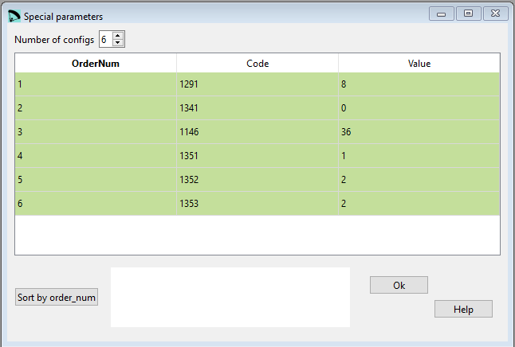

Special Parameters¶
This section will be a “wildcard”, to add special parameters to control things from previous or future data sections… It is an unorthodox and somewhat “dangerous” section, because any parameter or modification of previous or future ones could be added here. (!).
Each line will start with a control code, an integer that will have a meaning to be specified. And then, on the same line, one or more parameters (integers, reals, or characters) related to the subject of the control code.
{kind=link}
Raw data:
*******************************************************
* 37. SOME SPECIAL PARAMETERS
*******************************************************
1
6
1291 8 nsegments in transverse direction (stl surfaces)
1341 0 use CAD colors for each line type according table 34
1146 36. gravity center in % of a typical section (default is 36%)
1351 1 Solve method (1 or 6)
1352 2 Use flat area (1) or projected area (2)
1353 2 Print normal (0) or advanced detailed output (1),(2)
The codes available in 2022-09-18 are:
Code 1146, which means that it is necessary add a real estimated mass center % of a typical section (0% leading edge, 100% trailing edge). Used only to calculate the estimated wing center of mass. Default value is 36%.
Code 1291, which means that it is necessary to write on the right an integer number which is the number of transversal segments to use on the STL surfaces (related to section 29).
Code 1341 if code is followed by a “1”, then the lines will be drawn according to the colors by type defined in section 34. If it is a “0” the colors will be drawn according to the risers, in accordance with sections 24 and 25 . If code 1341 does not exist, the colors are defined by sections 24 and 25. And some “Programmer secret parameters” (maybe, they will be removed soon):
Code 1351 set the solve method of equilibrium equations. Six different methods are currently being calibrated.
Method 1: The Lift and Drag are multiplied by a coefficient K to homogenize their value. The system of vertical (I) and horizontal (II) equilibrium equations is solved numerically for the unknowns K and gamma (glide angle), and all other parameters being data. A continuous range of gamma values is explored, and when the K1 values in the vertical equation match the K2 value in the horizontal equation, the system is considered solved. By adding to the data file some additional drag coefficient Cde=1.1 to 1.4 the results are quite realistic. This extra drag coefficient tries to represent the geometry not modeled in the aerodynamic calculation (probably billow and inlets).
Method 2: In the balance equations an Extra Drag of the wing is considered: The two unknowns to be solved are gamma and Dragextra, with a numerical method similar to the previous case, we explore a range of gamma until the Dragextra values match in the two equations . With some initial values of Lift and Drag, the system does not converge, a warning message is displayed in output file, and then general scaling adjustments in pilot weight or wing area are required.
Method 3: Combination of the previous two, first a coefficient K is provisionally calculated, to homogenize the Lift and Drag, and then the two equations (V,H) system is solved by gamma angle and extra drag. This method provides quite good results.
Method 4: Solves glide angle gamma directly using analytical expression (horizontal equilibrium). Use code 1352 set to 2 when using method 4. Flight speed is obtained from the Lift equation (same as in the previous methods).
Method 5: Solves glide angle gamma directly using analytical expression (horizontal equilibrium), as in method 4. Then solves flight speed numerically, from the vertical equilibrium equation. Then computes again gamma, Lift, Drag and other values.
Method 6: This is a fully analytical method. The glide angle calculation gamma is based on the horizontal balance equation. Gamma is expressed from initial values (and results of intermediate calculations), and independent of flight speed. The flight speed is also calculated analytically from the vertical balance equation. With the flight speed calculated, the Lift and Drag values are calculated again, and used in the moment balance equation to obtain the ideal trim “calage”. Also other values derived in simple form. Thus the system is completely resolved in a very elegant way. The calage calculation is carried out using only the moment balance equation (III), once the gamma (glide) and theta (assiette) angles are known, and is the same for all methods.
The accuracy of the methods and their applicability is currently under study. It is recommended to use only method 1 or method 6. The results are practically the same. Results of methods 1 and 6 are consistent with the experimental results obtained with Hegala and Tuluaq paragliders. The parameter “cle” (extra lift coefficient) is usually set to 1.0. The parameter “cde” (extra drag coefficient), has a key importance in the final result. It represents the drag that the numerical model used (XFLR5 o CFD) could not determine. For practical purposes it is necessary to use “cde” values based on previous paraglider designs, or simply adjust cde until the output glide ratio is as expected… This will provide a calage value close to reality. If code 1351 is not specified, the default used method is 1. Methods 2 to 5 are still under review, do not use
Code 1352, set 1 to use flat area, or 2 to use projected area, in Lift, Drag, and speed calculus. Due to the internal adjustments made, this aspect has almost no influence on the results. By default the value used is 2. Use value 2 when using method 4 in code 1352. It is a code that the regular user does not need to specify
Code 1353, set 0 to output the standard report in section 17 of lep-out.txt, or set to 1 or 2 for more detailed output used for studies and calibrating methods. Default is 0. Most verbose mode is 2.
Code 2003 If this code and angle is indicated, this is the assiette taken into account to calculate chi and phi, bypassing the program’s internal calculation for tetha.
Example for an angle of -1º:
2003 -1.0
A more detailed description you can find here Laboratori d'envol website.